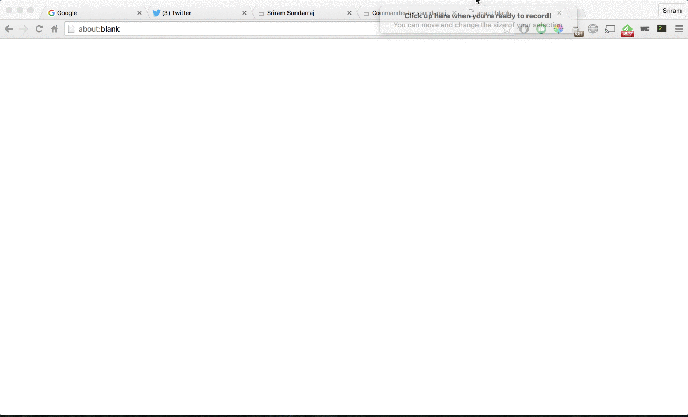

Commander is a command palette for Chrome. You can perform all actions that you would using a mouse or keyboard shortcuts that are impossible to remember.

Never take your hands off the keyboard
Ever wanted a way to control your entire browser without having to move your hands off the keyboard? Now you have it. Commander is a Sublime Text/Atom-esque command palette. You don't have to remember any more shortcuts - just one to open the command palette.
Now you can even search on Wikipedia, YouTube, IMDB and Dictionary.com!

Easy to use
Using fuzzy serach, you don't even have to type what you want to do fully. Just press Ctrl+Y (or Cmd+J) and start typing a few letters. We'll try to give you the best prediction possible.
Installation
To get Commander, head over to our page on the Chrome Store. You can also install it from source here.
Authors and Contributors
This Chrome extension was written by Sriram Sundarraj. Contribtions are welcome. To get started visit the repo on Github
Support or Contact
Having trouble with Commander? Want more features? Or anything else? You can report bugs and request for features here or via email.